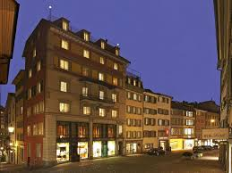

 The Widder Hotel is a hotel in the old town of Zurich. It is housed in eight listed formerly independent buildings from the Middle Ages . It is also a member of The Leading Hotels of the World and Swiss Deluxe Hotels . The owner is Ihag Holding , which belongs to Swiss Life. The then Swiss Bank Corporation (now UBS), owner and owner of the property, developed the project in a 10-year conversion period that preceded the opening of the Widder Hotel in 1995. Responsible for the project was the Swiss architect Tilla Theus . The conversion was planned and realized by the Karl Steiner Group . The renovation and restoration of the medieval properties has had a significant influence on the Augustiner quarter. The Widder Hotel is a five-star hotel with 42 rooms and seven suites, three restaurants, garden and library. The interior contrasts design classics by Mies van der Rohe and Le Corbusier, as well as a modern art collection with works by Robert Rauschenberg , Max Bill and Andy Warhol, with the hotel's historic heritage.
Switzerland Page